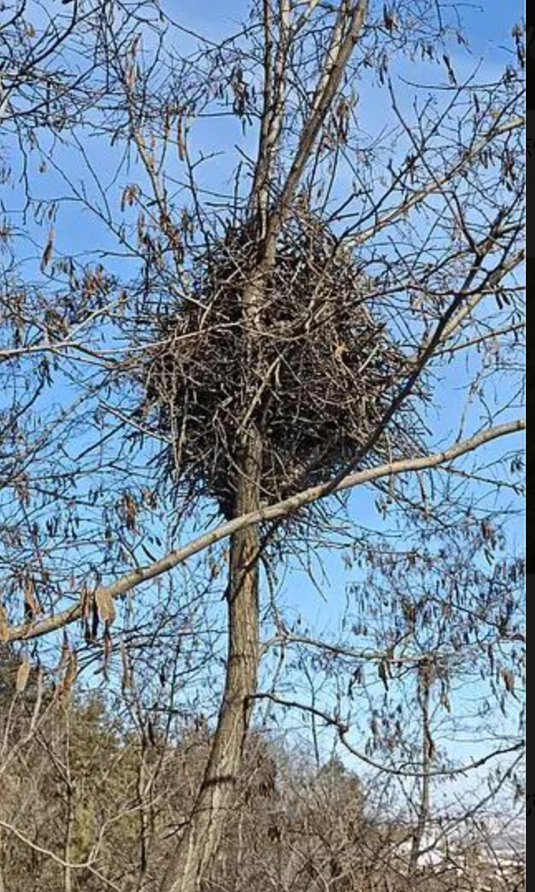
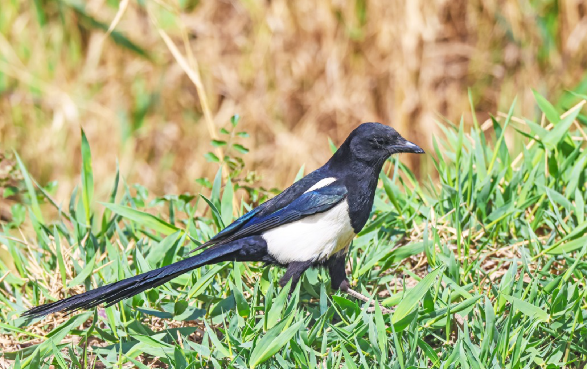
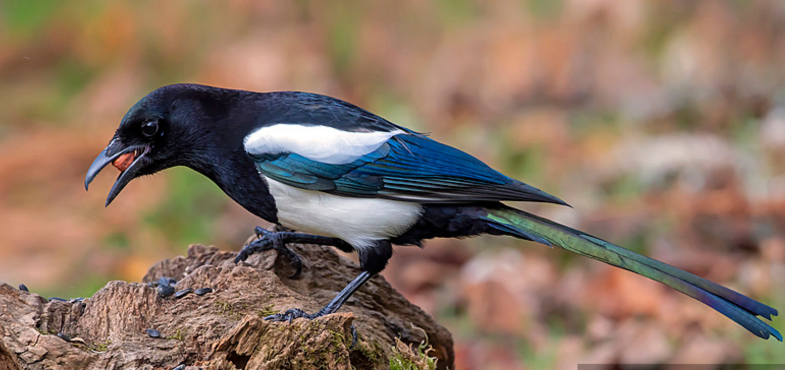
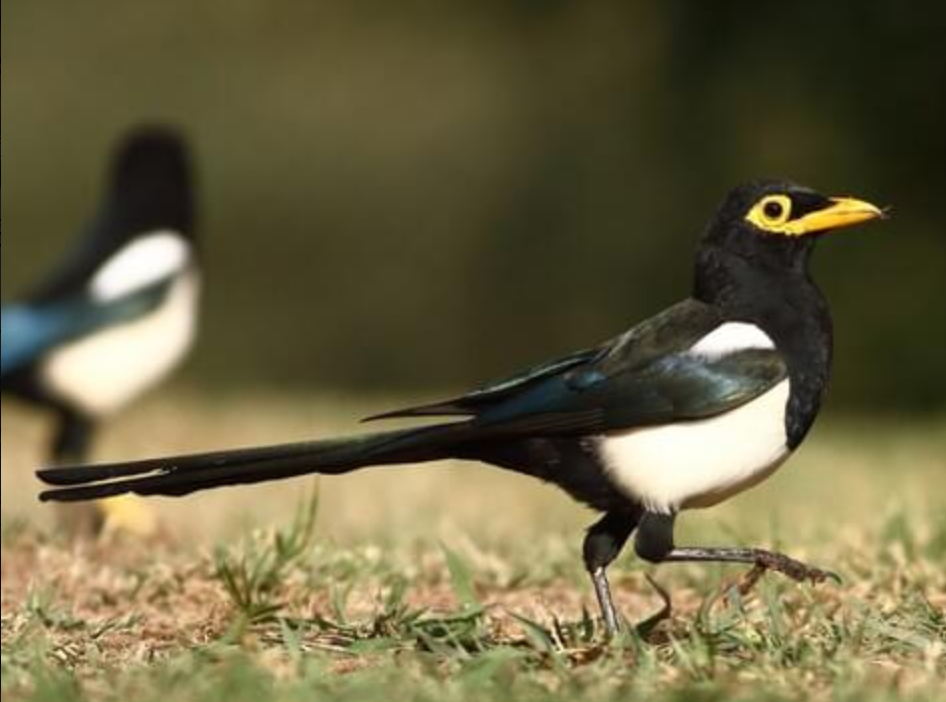
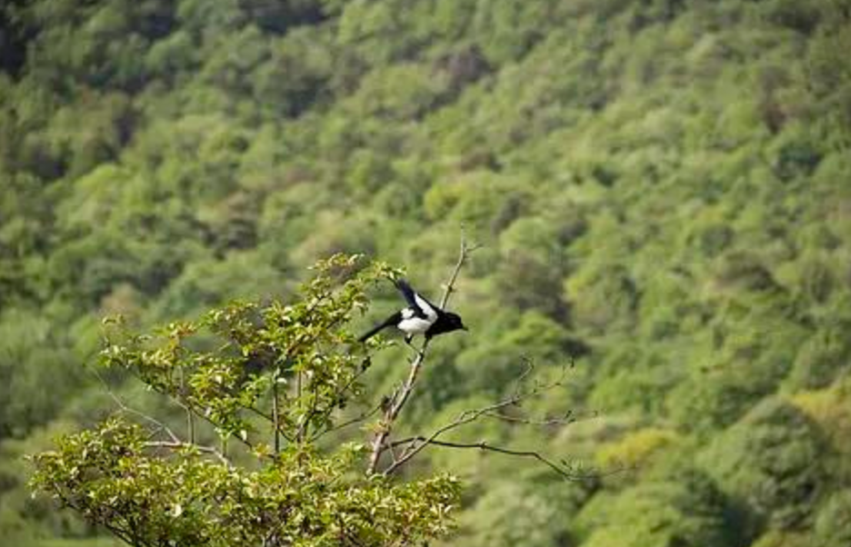

羽翼守望者


鹊属（Pica）隶属于鸦科，全球约4种，分布于欧亚大陆和北美。体型中等（约40-50cm），羽毛以黑白为主，尾羽修长。它们智力水平高，能使用工具和识别镜像。杂食性，以昆虫、种子、小型动物和厨余为食。
繁殖期营巢于高大树木上，巢由枝条构筑，结构坚固。每窝产5-8枚卵。喜鹊是中国传统文化中的吉祥鸟，数量在城市中稳定增长。
📖 参考：点此处 查看国际鸟盟资料。

喜鹊是中国最常见的鹊属鸟类，体长约40-50cm，头、颈、背黑色，肩部白色，翼和尾具蓝色金属光泽。广泛分布于城市、乡村、农田，常见于公园、小区绿地。
杂食性，捕食昆虫、小型动物，也吃谷物、水果。繁殖期3-6月，营巢于高大树木顶端，每窝产5-8枚卵。种群稳定且适应力强。

欧亚喜鹊分布于欧洲和亚洲西部，外形与喜鹊相似，体型略小。在中国仅见于西北地区。以昆虫、种子和动物尸体为食。
繁殖期4-6月，营巢于树上。在城市化进程中，也能适应城市环境。

黄嘴喜鹊分布于美国加州，体长约45-50cm，具黄色喙和黄色眼周皮肤。以橡果、昆虫和动物尸体为食。
📖 参考：点此处 查看 IUCN 评估。

鹊属鸟类对城市环境适应性强，但可能遭受车辆碰撞和农药中毒。保护城市绿地、减少鼠药使用对它们有益。
📖 了解更多：点此处 查看中国林草局。